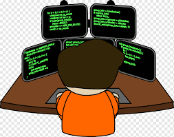

As a Student, my main goal is to graduate college and have a degree so that i will be able to have a Job and have the oppurtunity to give back to my mom. to pay off all of her sacrifices even if she did not obliged me to do it. as a filipino who grow up in a family oriented environment, it feels relief if you'll be able to provide to your parents.

it would be a relief if they we're just relaxing on their old age without being afraid that they'll starve if they dont work. soon as I have a Job, ill save enough money to be able to build my own house and establish a good business because we all know that we can't work forever, we should always consider the risk of the world.
Once I established a good life, it is the right time to settle down and create my own family. so that when the day that I die, I'll die with no regrets because I lived my life to the fullest..